class: center, titleslide <br><br> # Python Workshop: # Natural Language Processing <br> ## <a href="http://www.tiesdekok.com" target="_blank">Ties de Kok</a> ## Tilburg University --- layout: true class: mainlayout <div class='custom_footer'><span>Python Workshop | Natural Language Processing with Python | Ties de Kok (© 2018)</span></div> --- class: tocslide .left-column[ ## Agenda ] .right-column[ ### What are we going to discuss today? <span style="display: block; padding-top: 1px"></span> 1. Positioning session 2. Terminology 3. Python for NLP 4. NLP Python tools 5. Topics: - Process and Clean text - Direct feature extraction - Represent text numerically - Machine learning ] --- class: tocslide .left-column[ ## Agenda ## Positioning ] .right-column[ ### Where does this session fit into the bigger scheme of NLP? <span style="display: block; padding-top: 1px"></span> - Determining relevance textual data - Finding sources textual data - Gathering textual data <span style="padding-left: 20px" class="arrow-right"></span> .emphasized[Processing textual data] <span style="padding-left: 20px" class="arrow-right"></span> .emphasized[Analyzing textual data] ] --- class: tocslide .left-column[ ## Agenda ## Positioning ## Terminology ] .right-column[ ### Many inter-related names and terms: <span style="display: block; padding-top: 1px"></span> - Computational Linguistics - Textual Analysis - Text Mining <span style="padding-left: 20px" class="arrow-right"></span> .emphasized[Natural Language Processing] ] --- class: tocslide .left-column[ ## Agenda ## Positioning ## Terminology ## Language ] .right-column[ ### Which programming language / software to use for NLP? <span style="display: block; padding-top: 1px"></span> <span style="padding-left: 20px" class="arrow-right"></span> .emphasized[Python] - R - PERL ] --- class: tocslide .left-column[ ## Agenda ## Positioning ## Terminology ## Language ## NLP Python ] .right-column[ ### NLP Python libraries: my recommendations <span style="display: block; padding-top: 1px"></span> **Standard NLP libraries**: 1. [`NLTK`](http://www.nltk.org/) and the higher-level wrapper [`TextBlob`](https://textblob.readthedocs.io/en/dev/) 2. [`Spacy`](https://spacy.io/) and the higher-level wrapper [`Textacy`](https://github.com/chartbeat-labs/textacy) <span style="display: block; padding-top: 1px"></span> **Standard machine learning library**: 1. [`scikit learn`](http://scikit-learn.org/stable/) <span style="display: block; padding-top: 1px"></span> **Topic modelling library** *(not covered)*: 1. [`Gensim`](https://github.com/RaRe-Technologies/gensim) ] --- class: tocslide .left-column[ ## Agenda ## Positioning ## Terminology ## Language ## NLP Python ## NLP Space ] .right-column[ 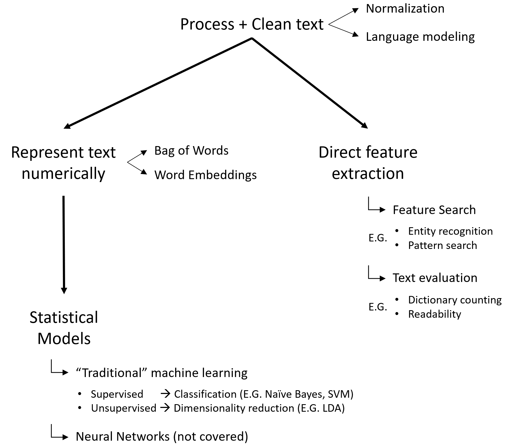 ] --- class: tocslide .left-column[ ## Process <br> & Clean ] .right-column[ 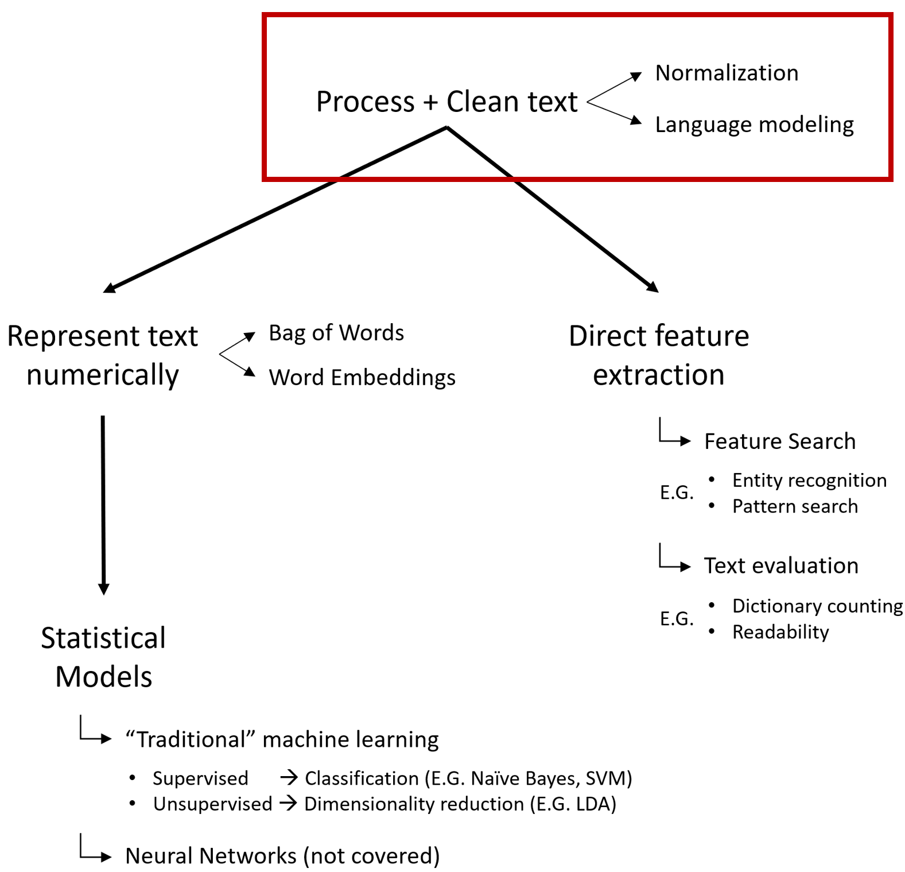 ] --- exclude: false class: tocslide .left-column[ ## Process <br> & Clean ] .right-column[ ### Text normalization - Sentence segmentation > i.e. split text up into sentences - Word tokenization > i.e. split sentence up into tokens (i.e. words) ] -- exclude: true .right-column-next[ - Entity normalization > i.e. "http://www.google.com" → "URL" - Lemmatization & Stemming > Convert tokens to a base representation ] --- exclude: true class: tocslide .left-column[ ## Process <br> & Clean ] .right-column[ ### Language modelling Text has a complex underlying structure that you can tap into. - Part-of-Speech tagging > Identify the "Word Class" of a token (e.g. noun, verb) - Remove stop words > Remove words that don't carry any informational value - Uni-Gram vs. N-Grams > Multi-word token: retain some of the sequential nature ] --- exclude: false class: tocslide .left-column[ ## Process <br> & Clean ] .right-column[ ###<span style="padding-left: 15px">Uni-Gram vs. N-Grams</span> > Multi-word token: retain some of the sequential nature <span style='display:block; text-align: center'>"Tilburg University is located in Noord Brabant"</span> <style type="text/css"> .tg {border-collapse:collapse;border-spacing:0;margin:0px auto;} .tg td{font-family:Arial, sans-serif;font-size:14px;padding:2px 50px;border-style:solid;border-width:1px;overflow:hidden;word-break:normal; text-align: center} .tg th{font-family:Arial, sans-serif;font-size:14px;font-weight:normal;padding:10px 5px;border-style:solid;border-width:1px;overflow:hidden;word-break:normal; font-weight: bold} .tg .tg-yw4l{vertical-align:top} </style> <table class="tg"> <tr> <th class="tg-yw4l">Unigram</th> <th class="tg-yw4l">Bigram</th> <th class="tg-yw4l">Trigram</th> </tr> <tr> <td class="tg-yw4l">Tilburg</td> <td class="tg-yw4l">Tilburg-University</td> <td class="tg-yw4l">Tilburg-University-is</td> </tr> <tr> <td class="tg-yw4l">University</td> <td class="tg-yw4l">University-is</td> <td class="tg-yw4l">University-is-located</td> </tr> <tr> <td class="tg-yw4l">is</td> <td class="tg-yw4l">is-located</td> <td class="tg-yw4l">is-located-in</td> </tr> <tr> <td class="tg-yw4l">located</td> <td class="tg-yw4l">located-in</td> <td class="tg-yw4l">located-in-Noord</td> </tr> <tr> <td class="tg-yw4l">in</td> <td class="tg-yw4l">in-Noord</td> <td class="tg-yw4l">in-Noord-Brabant</td> </tr> <tr> <td class="tg-yw4l">Noord</td> <td class="tg-yw4l">Noord-Brabant</td> <td class="tg-yw4l"></td> </tr> <tr> <td class="tg-yw4l">Brabant</td> <td class="tg-yw4l"></td> <td class="tg-yw4l"></td> </tr> </table> ] --- class: tocslide .left-column[ ## Process <br> & Clean ## Feature Extraction ] .right-column[ 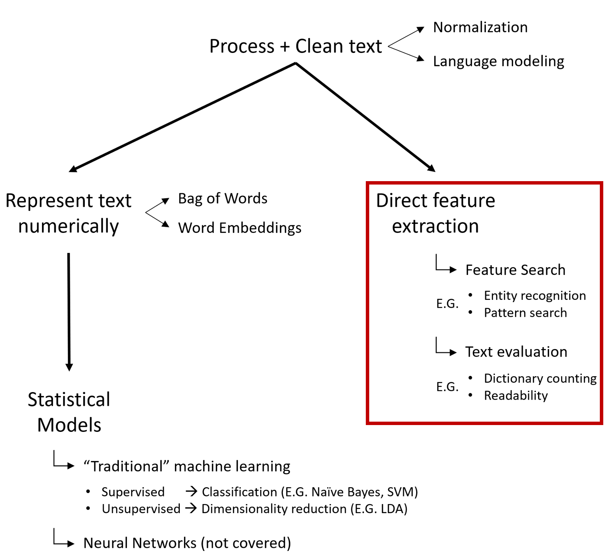 ] --- exclude: true class: tocslide .left-column[ ## Process <br> & Clean ## Feature Extraction ] .right-column[ ### Feature search <span style="display: block; padding-top: 1px"></span> * Entity extraction > e.g. extract PEOPLE / EVENTS / DATES / MONETARY VALUES * Pattern search (`RE`) > i.e. use [`Regular Expressions`](https://scotch.io/tutorials/an-introduction-to-regex-in-python) to look for patterns * Term (Dictionary) counting > i.e. count the number of times a term occurs ] --- class: tocslide .left-column[ ## Process <br> & Clean ## Feature Extraction ] .right-column[ ### Pattern search (`RE`) 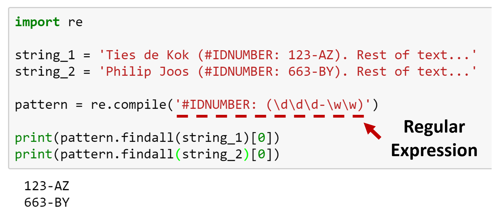 <br> **TIP**: Use [Pythex.org](https://pythex.org/) or [Regex101.com](https://regex101.com) to try out your regular expression <span style="padding-left: 20px" class="arrow-right"></span>Example on Pythex: <a href="https://pythex.org/?regex=IDNUMBER: (\d\d\d-\w\w)&test_string=Ties de Kok (IDNUMBER: 123-AZ). Rest of Text.">click here</a> <span style="padding-left: 20px" class="arrow-right"></span>Example on Regex101: <a href="https://regex101.com/r/XxVPOg/1">click here</a> ] --- class: tocslide .left-column[ ## Process <br> & Clean ## Feature Extraction ] .right-column[ ### Term (Dictionary) counting 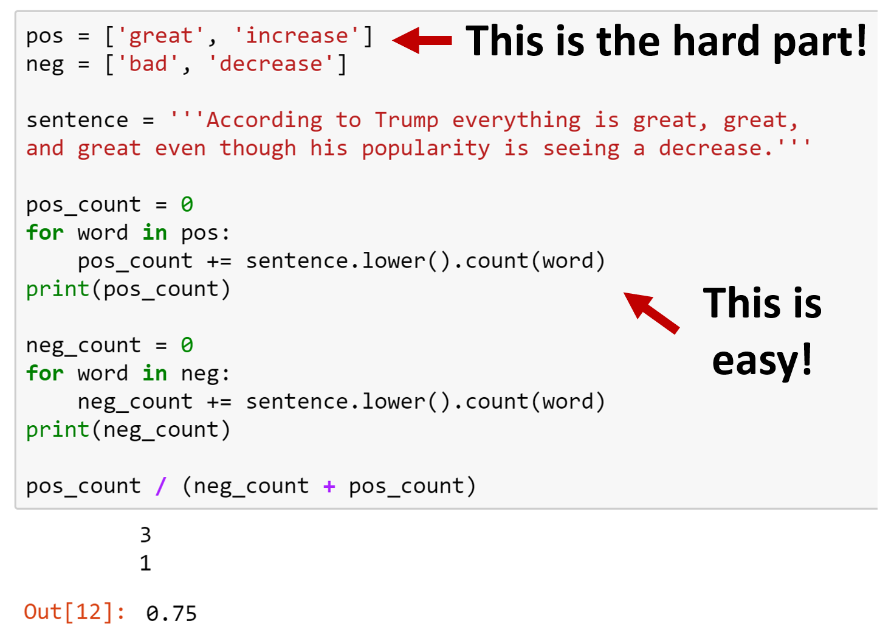 ] --- exclude: true class: tocslide .left-column[ ## Process <br> & Clean ## Feature Extraction ] .right-column[ ### **Accounting Research:** Term (Dictionary) counting 1. Loughran and McDonald (2011, JF) <span style="padding-left: 20px" class="arrow-right"></span> Positive / Negative dictionaries for financial texts 2. Garcia and Norli (2012, JFE) <span style="padding-left: 20px" class="arrow-right"></span> Geographic dispersion based on state name mentions 3. Brochet, Loumioti, and Serafeim (2015, RAST) <span style="padding-left: 20px" class="arrow-right"></span> Count horizon related words in conference calls ] -- exclude: true .right-column-next[ <span style="display: block; padding-top: 1px"></span> <lu style="font-size: 10pt;"> <b style="font-size: 12pt;">References:</b> <li>Loughran, T., & McDonald, B. (2011). <br> When is a liability not a liability? Textual analysis, dictionaries, and 10‐Ks. The Journal of Finance, 66(1), 35-65.</li> <li>Garcia, D., & Norli, Ø. (2012). <br> Geographic dispersion and stock returns. Journal of Financial Economics, 106(3), 547-565.</li> <li>Brochet, F., Loumioti, M., & Serafeim, G. (2015).<br> Speaking of the short-term: Disclosure horizon and managerial myopia. Review of Accounting Studies, 20(3), 1122-1163.</li> </lu> ] --- class: tocslide .left-column[ ## Process <br> & Clean ## Feature Extraction ] .right-column[ ### Text evaluation * Language > i.e. detect whether text is English * Readability > i.e. use the [`TextStat`](https://github.com/shivam5992/textstat) package to calculate text statistics * Text similarity 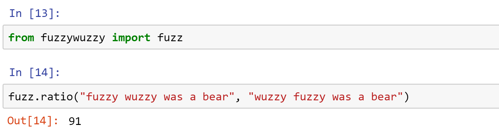 <span style="padding-left: 20px" class="arrow-right"></span>See the awesome [`FuzzyWuzzy`](https://github.com/seatgeek/fuzzywuzzy) package for details. ] --- exclude: true class: tocslide .left-column[ ## Process <br> & Clean ## Feature Extraction ] .right-column[ ### **Accounting Research:** Readability measures 1) Li (2008, JAE) <span style="padding-left: 20px" class="arrow-right"></span> Basic readability metrics (Fog etc.) and earnings <br> 2) Bonsall, Leone, Miller, Rennekamp (2017, JAE) <span style="padding-left: 20px" class="arrow-right"></span> Proprietary "Plain English" measure ] -- exclude: true .right-column-next[ <span style="display: block; padding-top: 50px"></span> <lu style="font-size: 10pt;"> <b style="font-size: 12pt;">References:</b> <li>Li, F. (2008). <br> Annual report readability, current earnings, and earnings persistence. Journal of Accounting and economics, 45(2-3)</li> <li>Bonsall IV, S. B., Leone, A. J., Miller, B. P., & Rennekamp, K. (2017).<br> A plain English measure of financial reporting readability. Journal of Accounting and Economics, 63(2-3)</li> </lu> ] --- exclude: true class: tocslide .left-column[ ## Process <br> & Clean ## Feature Extraction ] .right-column[ ### **Accounting Research:** Similarity measures 1) Merkley (2013, TAR) <span style="padding-left: 20px" class="arrow-right"></span> Identify amount of repetitive R&D information based on similarity <br> 2) Lang and Stice-Lawrence (2015, JAE) <span style="padding-left: 20px" class="arrow-right"></span> Similarity of financial narratives based on cosine similarity ] -- exclude: true .right-column-next[ <span style="display: block; padding-top: 50px"></span> <lu style="font-size: 10pt;"> <b style="font-size: 12pt;">References:</b> <li>Merkley, K. J. (2013). <br> Narrative disclosure and earnings performance: Evidence from R&D disclosures. The Accounting Review, 89(2), 725-757.</li> <li>Lang, M., & Stice-Lawrence, L. (2015).<br> Textual analysis and international financial reporting: Large sample evidence. Journal of Accounting and Economics, 60(2-3), 110-135.</li> </lu> ] --- class: tocslide .left-column[ ## Process <br> & Clean ## Feature Extraction ## Represent Numerically ] .right-column[ 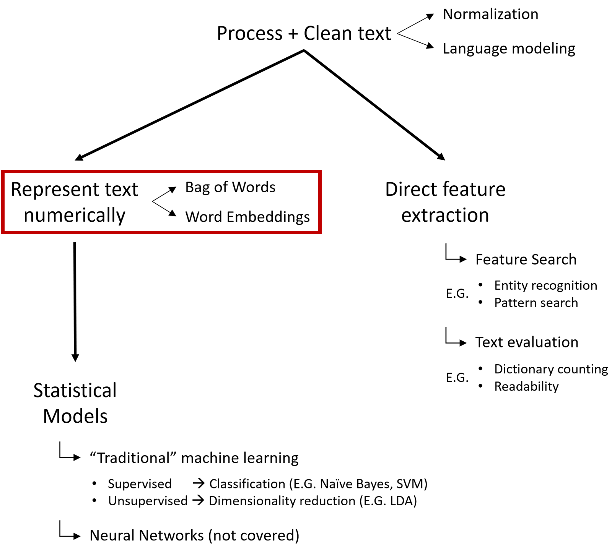 ] --- class: tocslide .left-column[ ## Process <br> & Clean ## Feature Extraction ## Represent Numerically ] .right-column[ ### Bag of Words Also labelled: *frequency based representation* Term frequency (TF) <img style="position: relative; margin-left:40px;" src="images/BoWs_figure61.PNG", width=65%><br> <span style="font-size: 8pt; position: relative; margin-left:110px">(Figure taken from: https://web.stanford.edu/~jurafsky/slp3/6.pdf)</span> ] --- class: tocslide .left-column[ ## Process <br> & Clean ## Feature Extraction ## Represent Numerically ] .right-column[ ### Term frequency (TF) example: <span style="display: block; padding-top: 1px"></span> > <span style='font-size: 10pt; line-height: 80%'>[1] "The sky is blue." > [2] "The sun is bright today." > [3] "The sun in the sky is bright." > [4] "We can see the shining sun, the bright sun."</span> 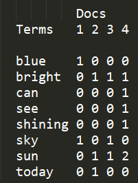<br> <span style='font-size:11pt'>Note: the collection of all text documents is called the *corpus* </span> <span style="font-size: 8pt; position: relative; margin-left:110px">(Example taken from: http://ethen8181.github.io/machine-learning/clustering_old/tf_idf/tf_idf.html)</span> ] --- exclude: true class: tocslide .left-column[ ## Process <br> & Clean ## Feature Extraction ## Represent Numerically ] .right-column[ 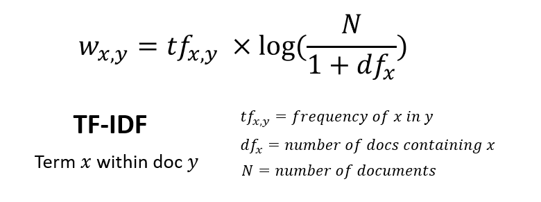<br> ] -- exclude: true .right-column-next[ <img style="position: relative; margin-left:80px;" src="https://d1avok0lzls2w.cloudfront.net/uploads/blog/5445d032e97981.23456174.jpg", width=50%><br> <span style="font-size: 8pt; position: relative; margin-left:90px">(Figure taken from: and https://moz.com/blog/7-advanced-seo-concepts)</span> ] --- exclude: true class: tocslide .left-column[ ## Process <br> & Clean ## Feature Extraction ## Represent Numerically ] .right-column[ ### TF-IDF example: <span style="display: block; padding-top: 2px"></span> > <span style='font-size: 10pt; line-height: 80%'>[1] "The sky is blue." > [2] "The sun is bright today." > [3] "The sun in the sky is bright." > [4] "We can see the shining sun, the bright sun."</span> 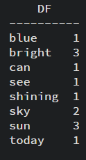 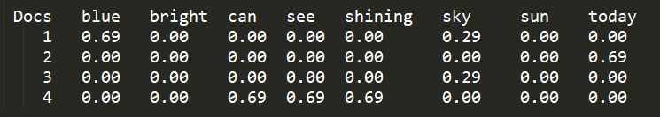 <br> <span style="font-size: 8pt; position: relative; margin-left:110px">(Example taken from: http://ethen8181.github.io/machine-learning/clustering_old/tf_idf/tf_idf.html)</span> ] --- exclude: true class: tocslide .left-column[ ## Process <br> & Clean ## Feature Extraction ## Represent Numerically ] .right-column[ ### Word Embeddings Are there alternatives to the frequency based representation? <span style="padding-left: 20px" class="arrow-right"></span> Yes, meet the new "secret sauce": **word embeddings**! ] -- exclude: true .right-column-next[ <br> Word embeddings are based on a "prediction based representation". Basic idea: > A word is characterized by the company it keeps: <br><br> > 1. A **Ferrari** is a fast car > 2. A **Lamborgini** is a fast car <span style="font-size:10pt">Notes: the most well-known adaptation is `Word2Vec`. Word embeddings are sometimes called *Continous Bag of Words*</span> ] --- class: tocslide .left-column[ ## Process <br> & Clean ## Feature Extraction ## Represent Numerically ## Machine Learning ] .right-column[ 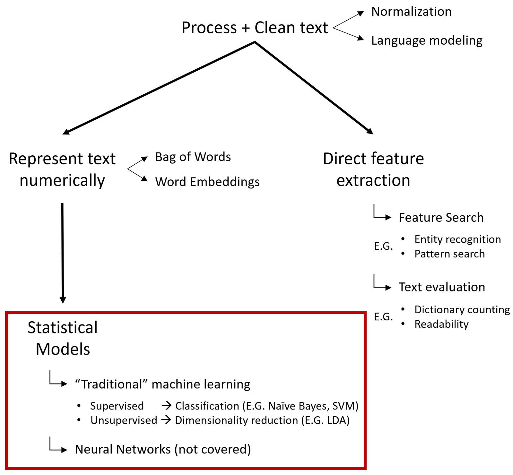 ] --- class: tocslide .left-column[ ## Process <br> & Clean ## Feature Extraction ## Represent Numerically ## Machine Learning ] .right-column[ ### What is Machine Learning? <span></span> > A machine learning algorithm is not explicitly programmed. <br> Instead, the algorithm is trained based on the input + output data. Does this sound familiar? ] -- .right-column-next[ <span style="padding-left: 20px" class="arrow-right"></span> A linear regression is also machine learning! ] -- .right-column-next[ ### Example: sentiment analysis Traditional method: <span style="padding-left: 20px" class="arrow-right"></span> manually create pos/neg word lists Machine learning method: <span style="padding-left: 20px" class="arrow-right"></span> manually classify sentence pos/neg score <span style="padding-left: 20px" class="arrow-right"></span> pos/neg word lists determined by algorithm ] --- class: tocslide .left-column[ ## Process <br> & Clean ## Feature Extraction ## Represent Numerically ## Machine Learning ] .right-column[ ### Supervised Machine Learning <span></span> > Supervised ML algorithms are trained on classified training data. ] -- .right-column-next[ <span style="display:block; height:1px"></span> ### Where to get training data? 1. Use a naturally classified training set - News categories - Movie reviews - Text books for different levels of English 2. Create your own training set - Manually classify text - Crowdsource a training set <span style="padding-left: 20px" class="arrow-right"></span>Amazon Mechanical Turk is a great way to get training data! ] --- exclude: true class: tocslide .left-column[ ## Process <br> & Clean ## Feature Extraction ## Represent Numerically ## Machine Learning ] .right-column[ ### Supervised Machine Learning: models <span></span> Three often used models for Supervised ML: 1. Naive Bayes classifier ([sklearn link](http://scikit-learn.org/stable/modules/naive_bayes.html)) 2. SVM: Support Vector Machines ([sklearn link](http://scikit-learn.org/stable/modules/svm.html)) 3. Decision Trees ([sklearn link](http://scikit-learn.org/stable/modules/tree.html#classification)) ] -- exclude: true .right-column-next[ **My recommendation?** Always try multiple models to see which gives you the best results. * Naive Bayes is good for small samples and quick testing. * SVM is more sophisticated, generally better for more complex models. * Decision Trees are more intuitive but harder to train. Regardless of the model: <span style="padding-left: 20px" class="arrow-right"></span> hyperparameter optimization is very important! ] --- exclude: true class: tocslide .left-column[ ## Process <br> & Clean ## Feature Extraction ## Represent Numerically ## Machine Learning ] .right-column[ <img style="position: relative; top: -20px" src="https://image.slidesharecdn.com/meetupsvenhafeneger-161101090800/95/hyperparameter-optimization-sven-hafeneger-5-638.jpg", width=80%> <span style="font-size: 8pt; position: relative; margin-left:50px">(Slide taken from: https://www.slideshare.net/sparktc/hyperparameter-optimization-sven-hafeneger)</span> ] --- exclude: true class: tocslide .left-column[ ## Process <br> & Clean ## Feature Extraction ## Represent Numerically ## Machine Learning ] .right-column[ ### Model Selection and Evaluation <span></span> > i.e. how to select the model and hyperparameters? ####There are two essential metrics in ML: 1. Precision > High precision --> low false positive rate 2. Recall > High recall --> low false negative rate <br> <span style='font-size:13pt; position: relative; margin-left:20px'>For details see: [Precision-Recall](http://scikit-learn.org/stable/auto_examples/model_selection/plot_precision_recall.html)</span> ] --- exclude: true class: tocslide .left-column[ ## Process <br> & Clean ## Feature Extraction ## Represent Numerically ## Machine Learning ] .right-column[ ### **Accounting Research:** Supervised Machine Learning 1) Li (2010, JAR) <span style="padding-left: 20px" class="arrow-right"></span> Classify tone and content of FL statements using Naïve Bayes <br> 2) Jegadeesh and Wu (2013, JAE) <span style="padding-left: 20px" class="arrow-right"></span> Term weights for tone words by "training" on abnormal returns ] -- exclude: true .right-column-next[ <span style="display: block; padding-top: 50px"></span> <lu style="font-size: 10pt;"> <b style="font-size: 12pt;">References:</b> <li>Li, F. (2010). <br> The information content of forward‐looking statements in corporate filings—A naïve Bayesian machine learning approach. Journal of Accounting Research, 48(5), 1049-1102.</li> <li>Jegadeesh, N., & Wu, D. (2013). <br> Word power: A new approach for content analysis. Journal of Financial Economics, 110(3), 712-729.</li> </lu> ] --- class: tocslide .left-column[ ## Process <br> & Clean ## Feature Extraction ## Represent Numerically ## Machine Learning ] .right-column[ ### Unsupervised Machine Learning <span></span> > Unsupervised ML algorithms are trained using only input data. Do unsupervised ML models work for all problems? <span style="padding-left: 20px" class="arrow-right"></span> No! Usually only for clustering / topic modelling. ] -- .right-column-next[ <br> Examples of unsupervised models: 1. Principal Component Analysis / Factor Analysis 2. **Latent Dirichlet Allocation (LDA)** > Unsupervised topic model technique to discover abstract topics from a collection of documents. ] --- exclude: true class: tocslide .left-column[ ## Process <br> & Clean ## Feature Extraction ## Represent Numerically ## Machine Learning ] .right-column[ ### Latent Dirichlet Allocation (LDA) <span></span> > Unsupervised topic model technique to discover abstract topics from a collection of documents. ] -- exclude: true .right-column-next[ <br> ### LDA procedure You define the number of topics (*N*) and the other hyperparameters. LDA then assigns each document a vector with *N* topic probabilities. **Important:** topics are not labeled and there is a degree of randomness > i.e. running the same model twice can result in different topic labels! ] --- class: tocslide <div style="position:relative;"> <iframe class='frame' src="http://www.tiesdekok.com/ldaVIS_full_10.html" style="border:none;"></iframe> <span style='position: absolute; top:592px; left:200px; font-size:16pt;'>Made with the awesome <a href="https://github.com/bmabey/pyLDAvis">pyLDAvis</a> package</span> </div> --- exclude: true class: tocslide .left-column[ ## Process <br> & Clean ## Feature Extraction ## Represent Numerically ## Machine Learning ] .right-column[ ### **Accounting Research:** Unsupervised Machine Learning 1) Dyer, Lang, and Stice-Lawrence (2017, JAE) <span style="padding-left: 20px" class="arrow-right"></span> Use LDA to evaluate how the topics of 10-Ks have changed over time 2) Huang et al. (2017, MS) <span style="padding-left: 20px" class="arrow-right"></span> Thematic content of a large sample of analyst reports using LDA 3) Bird, Karolyi, Ma (2018, SSRN) <span style="padding-left: 20px" class="arrow-right"></span> Use LDA on 8-K documents to detect strategic misclassification ] -- exclude: true .right-column-next[ <span style="display: block; padding-top: -10px"></span> <lu style="font-size: 10pt;"> <b style="font-size: 12pt;">References:</b> <li>Dyer, T., Lang, M., & Stice-Lawrence, L. (2017). <br> The evolution of 10-K textual disclosure: Evidence from Latent Dirichlet Allocation. Journal of Accounting and Economics</li> <li>Huang, A. H., Lehavy, R., Zang, A. Y., & Zheng, R. (2017). <br> Analyst information discovery and interpretation roles: A topic modeling approach. Management Science.</li> <li>Bird, A., Karolyi, S. A., & Ma, P. (2018).<br> Strategic disclosure misclassification. SSRN</li> </lu> ] --- exclude: true class: tocslide .left-column[ ## Process <br> & Clean ## Feature Extraction ## Represent Numerically ## Machine Learning ## Neural Networks ] .right-column[ ### Neural Networks for NLP Natural Language is very complex, NLP is hard: 1. The Pope's baby steps on gays 2. Scientists study whales from space 3. Boy paralyzed after tumor fights back to gain black belt <span style="font-size: 8pt; position: relative; margin-left:20px">(Examples from: http://web.stanford.edu/class/cs224n/lectures/cs224n-2017-lecture1.pdf)</span> ] -- exclude: true .right-column-next[ ### Deep Neural Networks DNN allow to model complex phenomenon, promising progress for NLP! Interested? Check out the Stanford course CS224n ([Syllabus](http://web.stanford.edu/class/cs224n/syllabus.html))! ] --- exclude: true class: tocslide .left-column[ ## Notebook ] .right-column[ ### How to get started with NLP and Python? <span style="display: block; padding-top: 1px"></span> <span style="padding-left: 20px" class="arrow-right"></span> Take a look at my NLP repository! <span style="display: block; padding-top: 1px"></span> <a href='https://github.com/TiesdeKok/Python_NLP_Tutorial'>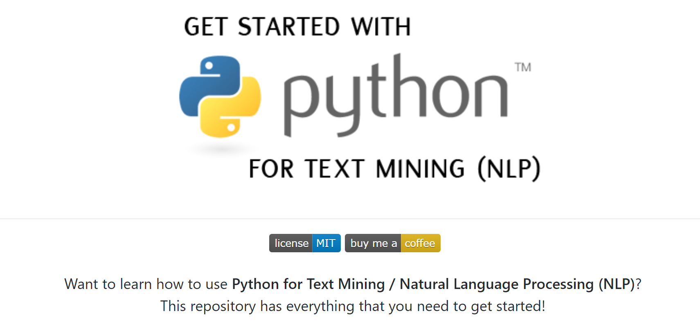</a> <a href="https://github.com/TiesdeKok/Python_NLP_Tutorial" style="position:relative; left:80px;">Github.com/TiesdeKok/Python_NLP_Tutorial</a> ] --- class: tocslide .left-column[ ## Closing remarks ] .right-column[ ### Closing remarks Getting started with NLP can be overwhelming. <span style="padding-left: 20px" class="arrow-right"></span> This is normal! <span style="display: block; padding-top: 5px"></span> **General tips:** 1. Remember, Google is your friend 2. Having a hard time determining your next step? <span style="padding-left: 20px" class="arrow-right"></span> Try to explicitly formulate what your (sub-)goal is 3. Asking for help? <span style="padding-left: 20px" class="arrow-right"></span> Avoid the XY problem: [xyproblem.info/](http://xyproblem.info/) 4. Don't get discouraged by the abundance of mathematics ] --- class: tocslide .left-column[ ## Closing<br>remarks ] .right-column[ <span style='position: relative; text-align:center; font-size: 28pt; left:200px;'><b>Questions?</b></span> <img style="position: relative; top: 10px; left:80px;" src="images/Business4-150ppp.jpg", width=60%> ] --- class: tocslide .left-column[ ## Closing<br>remarks ## Demonstration ] .right-column[ <span style='position: relative; text-align:center; font-size: 28pt; left:250px;'><b>Demonstration</b></span> <img style="position: relative; top: 10px; left:40px;" src="images/start_coding.jpg", width=90%> ] --- class: tocslide .left-column[ ## Closing<br>remarks ## Demonstration ## Mini-task ] .right-column[ ## Setup: 1. Download the session 4 materials from GitHub 2. Make sure you use the `uw-python-camp` environment ## Mini-task: **Goal:** Solve tasks in the "natural_language_processing.ipynb" notebook. 1. Open a Jupyter Notebook in the `UW_python_2018` folder 2. Solve the natural language processing tasks <span style="padding-left: 20px" class="arrow-right"></span> Find them in `Session_4 > natural_language_processing.ipynb` For help: - <a href="https://nbviewer.jupyter.org/github/TiesdeKok/LearnPythonforResearch/blob/master/0_python_basics.ipynb">Python Basics Notebook</a> - <a href="https://nbviewer.jupyter.org/github/TiesdeKok/Python_NLP_Tutorial/blob/master/NLP_Notebook.ipynb">NLP Python Notebook</a> ]